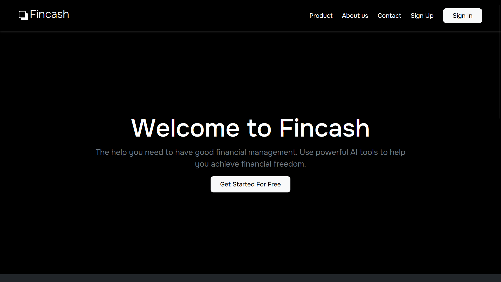

Alguns dos projetos que continuam ajudando as pessoas na nossa comunidade
Fincash

Uma API WEB de
gestão financeira. Que visa facilitar o controle e a organização das finanças
pessoais e empresariais, proporcionando aos usuários uma maneira eficiente de gerenciar receitas,
despesas, investimentos e orçamentos.
Acesse o projeto aqui:
Projeto Fincash
OmniDevs
 Projeto de alunos da Fatec. Dedicado para ajudar a prefeitura de
São José dos Campos na análise de dados sobre o censo da cidade, trazendo gráficos intuitivos, layout
minimalista e leve. Além de mapas interativos sobre os respectivos filtros da região.
Acesse o projeto aqui:
Projeto OmniDevs
Projeto de alunos da Fatec. Dedicado para ajudar a prefeitura de
São José dos Campos na análise de dados sobre o censo da cidade, trazendo gráficos intuitivos, layout
minimalista e leve. Além de mapas interativos sobre os respectivos filtros da região.
Acesse o projeto aqui:
Projeto OmniDevs
Cardápio
 Um site referente ao nosso restaurante, Tempero da casa.
Onde você pode visualizar nossas delícias atráves pelo cardápio.
Trazendo um interface dinâmica e com cores fortes, que te fazem sentir fome e mais alegria.
Acesse o projeto aqui:
Projeto Cardápio
Um site referente ao nosso restaurante, Tempero da casa.
Onde você pode visualizar nossas delícias atráves pelo cardápio.
Trazendo um interface dinâmica e com cores fortes, que te fazem sentir fome e mais alegria.
Acesse o projeto aqui:
Projeto Cardápio